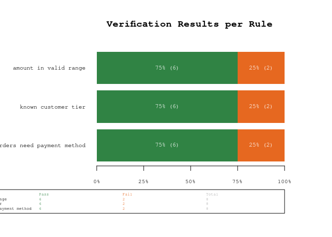
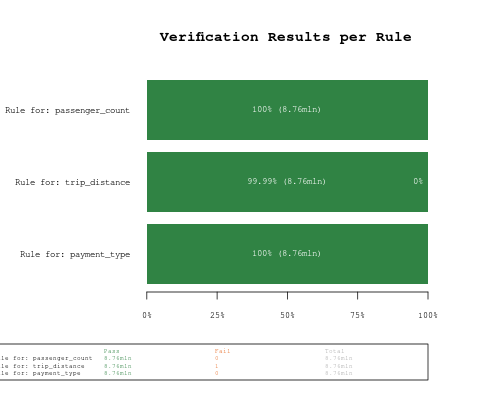

dataverifyr - A Lightweight, Flexible, and Fast Data Validation Package that Can Handle All Sizes of Data
The goal of dataverifyr is to allow a wide variety of flexible data validation checks (verifications). That means, you can specify a set of rules (R expressions) and compare any arbitrary dataset against it.
The package is built in such a way, that it adapts to your type of data and choice of data package (data.frame, data.table, tibble, arrow, or SQL connection) and chooses the right data backend automatically, this is especially handy when large or complicated datasets are involved. That way, you can concentrate on writing the rules and making sure that your data is valid rather than spending time writing boilerplate code.
The package is lightweight as all the heavy dependencies are Suggests-only, that means if you want to use data.table for the task, you don’t need to install the other packages (arrow, DBI, etc) unless you explicitly tell R to install all suggested packages as well when installing the package.
The backend for your analysis is automatically chosen based on the type of input dataset as well as the available packages (see also ?detect_backend(data)). By using the underlying technologies and handing over all evaluation of code to the backend, this package can deal with all sizes of data the backends can deal with.
The package also has a helper function to describe a dataset, see ?describe().
Installation
You can install the development version of dataverifyr like so:
# development version
# devtools::install_github("DavZim/dataverifyr")
# CRAN release
install.packages("dataverifyr")Example
This is a basic example which shows you how to
- create a rule set manually, consisting of R expressions
- check if a dataset matches all given rules
- save and load the rules to a yaml-file for better maintainability
Note that each rule is an R expression that is evaluated within the dataset. Our first rule, for example, states that we expect all amount values to be in a sensible range. At the moment rules work in a window/vectorized approach only, that means that a rule like this will work amount > 10 * as.numeric(paid), whereas a rule like this sum(amount) > 0 will not work as it aggregates values.
library(dataverifyr)
# use the packaged demo dataset (includes NAs + datetime)
data <- sample_data
# define a rule set within our R code; alternatively in a yaml file
rules <- ruleset(
rule(amount >= 0 & amount <= 10000, name = "amount in valid range"),
rule(customer_tier %in% c("bronze", "silver", "gold"), name = "known customer tier"),
rule(!paid | payment_method != "none", name = "paid orders need payment method")
)
# print the rules
rules
#> <Verification Ruleset with 3 elements>
#> [1] 'amount in valid range' matching `amount >= 0 & amount <= 10000` (allow_na: FALSE)
#> [2] 'known customer tier' matching `customer_tier %in% c("bronze", "silver", "gold")` (allow_na: FALSE)
#> [3] 'paid orders need payment method' matching `!paid | payment_method != "none"` (allow_na: FALSE)
# describe the dataset
describe(data)
#> var type n n_distinct n_na most_frequent min
#> <char> <char> <int> <int> <int> <char> <num>
#> 1: order_id integer 8 8 0 1
#> 2: customer_tier character 8 5 1 gold (2), silver (2), bronze (2) 4
#> 3: amount numeric 8 8 1 -5
#> 4: paid logical 8 3 1 TRUE (5), FALSE (2) 4
#> 5: payment_method character 8 4 1 card (3), none (3) 4
#> 6: order_time POSIXct 8 8 1 1735722000
#> mean median max sd
#> <num> <num> <num> <num>
#> 1: 4.500000e+00 4.5 8.000000e+00 2.449490e+00
#> 2: 5.571429e+00 6.0 7.000000e+00 1.133893e+00
#> 3: 9.440571e+01 80.0 3.202500e+02 1.104161e+02
#> 4: 4.285714e+00 4.0 5.000000e+00 4.879500e-01
#> 5: 4.000000e+00 4.0 4.000000e+00 0.000000e+00
#> 6: 1.736029e+09 1736005500.0 1.736334e+09 2.318349e+05
# check if the data matches our rules
res <- check_data(data, rules)
res
#> check_type name expr
#> <char> <char> <char>
#> 1: row_rule amount in valid range amount >= 0 & amount <= 10000
#> 2: row_rule known customer tier customer_tier %in% c("bronze", "silver", "gold")
#> 3: row_rule paid orders need payment method !paid | payment_method != "none"
#> allow_na negate tests pass fail warn error time
#> <lgcl> <lgcl> <int> <int> <int> <char> <char> <difftime>
#> 1: FALSE FALSE 8 6 2 0.001636744 secs
#> 2: FALSE FALSE 8 6 2 0.003160954 secs
#> 3: FALSE FALSE 8 6 2 0.000418663 secsAs we can see, this demo dataset does not conform to all of our rules. There is one negative amount, one unknown customer tier, and one row where paid == TRUE but payment_method == "none". The dataset also contains missing values and a datetime column (order_time) to mirror common real data inputs.
To see which values do not meet our expectations, use the filter_fails() function
filter_fails(res, data, per_rule = TRUE)
#> $`amount >= 0 & amount <= 10000`
#> order_id customer_tier amount paid payment_method order_time
#> <int> <char> <num> <lgcl> <char> <POSc>
#> 1: 3 bronze -5 FALSE none 2025-01-03 12:15:00
#> 2: 6 silver NA NA card 2025-01-06 08:10:00
#>
#> $`customer_tier %in% c("bronze", "silver", "gold")`
#> order_id customer_tier amount paid payment_method order_time
#> <int> <char> <num> <lgcl> <char> <POSc>
#> 1: 5 <NA> 45.10 FALSE none <NA>
#> 2: 8 unknown 99.99 TRUE none 2025-01-08 11:05:00
#>
#> $`!paid | payment_method != "none"`
#> order_id customer_tier amount paid payment_method order_time
#> <int> <char> <num> <lgcl> <char> <POSc>
#> 1: 6 silver NA NA card 2025-01-06 08:10:00
#> 2: 7 bronze 0.00 TRUE <NA> 2025-01-07 17:20:00
#> 3: 8 unknown 99.99 TRUE none 2025-01-08 11:05:00We can also visualize the results using the plot_res() function.
plot_res(res)
Note that you can also save and load a ruleset to and from a structured yaml file
write_rules(rules, "example_rules_v1.yaml", format = "v1")
r2 <- read_rules("example_rules_v1.yaml")
identical(rules, r2)
#> [1] FALSEThe resulting example_rules_v1.yaml looks like this
meta: ~
data-columns: []
data-rules:
- name: amount in valid range
expr: amount >= 0 & amount <= 10000
allow_na: no
negate: no
index: 1
- name: known customer tier
expr: customer_tier %in% c("bronze", "silver", "gold")
allow_na: no
negate: no
index: 2
- name: paid orders need payment method
expr: '!paid | payment_method != "none"'
allow_na: no
negate: no
index: 3dataverifyr uses structured v1 YAML (meta + data-columns + data-rules) in the main workflow.
One helpful use case is to use this functionality to assert that your data has the right values in a custom read function like so:
read_custom <- function(file, rules) {
data <- read.csv(file) # or however you read in your data
# if the check_data detects a fail: the read_custom function will stop
check_data(data, rules, xname = file,
stop_on_fail = TRUE, stop_on_warn = TRUE, stop_on_error = TRUE)
# ...
data
}
# nothing happens when the data matches the rules
data <- read_custom("correct_data.csv", rules)
# an error is thrown when warnings or errors are found
data <- read_custom("wrong_data.csv", rules)
#> Error in check_data(data, rules, stop_on_fail = TRUE, stop_on_error = TRUE, stop_on_warn = TRUE) :
#> In dataset 'wrong_data.csv' found 2 rule fails, 1 warnings, 1 errorsRow-Based Checks vs Column-Based Checks
dataverifyr supports two complementary layers of validation:
-
Row-based checks with
rule()
These answer questions like: “Is each value in a valid range?” or “Does each row satisfy a logical condition?”. -
Column-based checks with
data_columnsinruleset()
These answer questions like: “Does this column exist?”, “Is it required?”, and “Does it have the expected type?”.
The important idea is:
-
rule()is about values inside rows. -
data_column()is about the declared structure (schema) of the dataset.
Row-Based Rules (value checks)
library(dataverifyr)
row_rules <- ruleset(
rule(amount > 0, name = "amount is positive", allow_na = TRUE),
rule(customer_tier %in% c("bronze", "silver", "gold"), name = "known customer tier", allow_na = TRUE),
rule(!paid | payment_method != "none", name = "paid orders require payment method", allow_na = TRUE)
)
x <- sample_data
check_data(x, row_rules)
#> check_type name expr
#> <char> <char> <char>
#> 1: row_rule amount is positive amount > 0
#> 2: row_rule known customer tier customer_tier %in% c("bronze", "silver", "gold")
#> 3: row_rule paid orders require payment method !paid | payment_method != "none"
#> allow_na negate tests pass fail warn error time
#> <lgcl> <lgcl> <int> <int> <int> <char> <char> <difftime>
#> 1: TRUE FALSE 8 6 2 0.0005500317 secs
#> 2: TRUE FALSE 8 7 1 0.0004150867 secs
#> 3: TRUE FALSE 8 7 1 0.0004053116 secsThe result tells you, for each rule, how many rows passed/failed and whether warnings/errors occurred during evaluation.
Column-Based Rules (schema checks)
Column checks are attached to the ruleset() via data_columns.
schema_rules <- ruleset(
rule(amount > 0, name = "amount is positive", allow_na = TRUE),
data_columns = list(
data_column("order_id", type = "int", optional = FALSE, description = "Primary key"),
data_column("customer_tier", type = "str", optional = FALSE),
data_column("amount", type = "double", optional = FALSE),
data_column("paid", type = "logical", optional = FALSE),
data_column("payment_method", type = "str", optional = FALSE),
data_column("order_time", optional = TRUE)
)
)
x_ok <- sample_data
check_data(x_ok, schema_rules)
#> check_type name
#> <char> <char>
#> 1: schema Schema: column 'order_id' exists
#> 2: schema Schema: column 'order_id' has type 'int'
#> 3: schema Schema: column 'customer_tier' exists
#> 4: schema Schema: column 'customer_tier' has type 'str'
#> 5: schema Schema: column 'amount' exists
#> 6: schema Schema: column 'amount' has type 'double'
#> 7: schema Schema: column 'paid' exists
#> 8: schema Schema: column 'paid' has type 'logical'
#> 9: schema Schema: column 'payment_method' exists
#> 10: schema Schema: column 'payment_method' has type 'str'
#> 11: schema Schema: column 'order_time' exists
#> 12: row_rule amount is positive
#> expr allow_na negate tests pass fail warn error
#> <char> <lgcl> <lgcl> <int> <int> <int> <char> <char>
#> 1: column_exists('order_id') FALSE FALSE 1 1 0
#> 2: column_type('order_id') == 'int' FALSE FALSE 1 1 0
#> 3: column_exists('customer_tier') FALSE FALSE 1 1 0
#> 4: column_type('customer_tier') == 'str' FALSE FALSE 1 1 0
#> 5: column_exists('amount') FALSE FALSE 1 1 0
#> 6: column_type('amount') == 'double' FALSE FALSE 1 1 0
#> 7: column_exists('paid') FALSE FALSE 1 1 0
#> 8: column_type('paid') == 'logical' FALSE FALSE 1 1 0
#> 9: column_exists('payment_method') FALSE FALSE 1 1 0
#> 10: column_type('payment_method') == 'str' FALSE FALSE 1 1 0
#> 11: column_exists('order_time') FALSE FALSE 1 1 0
#> 12: amount > 0 TRUE FALSE 8 6 2
#> time
#> <difftime>
#> 1: 0.0000000000 secs
#> 2: 0.0000000000 secs
#> 3: 0.0000000000 secs
#> 4: 0.0000000000 secs
#> 5: 0.0000000000 secs
#> 6: 0.0000000000 secs
#> 7: 0.0000000000 secs
#> 8: 0.0000000000 secs
#> 9: 0.0000000000 secs
#> 10: 0.0000000000 secs
#> 11: 0.0000000000 secs
#> 12: 0.0003836155 secsIn this setup:
-
order_id,customer_tier,amount,paid, andpayment_methodmust exist (optional = FALSE) -
order_timeis optional in the schema declaration - row rules still run as usual (
amount > 0)
Handling extra columns
If your input has columns not declared in data_columns, use extra_columns:
x_extra <- sample_data
x_extra$unexpected_col <- c("a", "b", "c", "d", "e", "f", "g", "h")
# default: ignore undeclared columns
check_data(x_extra, schema_rules, extra_columns = "ignore")
#> check_type name
#> <char> <char>
#> 1: schema Schema: column 'order_id' exists
#> 2: schema Schema: column 'order_id' has type 'int'
#> 3: schema Schema: column 'customer_tier' exists
#> 4: schema Schema: column 'customer_tier' has type 'str'
#> 5: schema Schema: column 'amount' exists
#> 6: schema Schema: column 'amount' has type 'double'
#> 7: schema Schema: column 'paid' exists
#> 8: schema Schema: column 'paid' has type 'logical'
#> 9: schema Schema: column 'payment_method' exists
#> 10: schema Schema: column 'payment_method' has type 'str'
#> 11: schema Schema: column 'order_time' exists
#> 12: row_rule amount is positive
#> expr allow_na negate tests pass fail warn error
#> <char> <lgcl> <lgcl> <int> <int> <int> <char> <char>
#> 1: column_exists('order_id') FALSE FALSE 1 1 0
#> 2: column_type('order_id') == 'int' FALSE FALSE 1 1 0
#> 3: column_exists('customer_tier') FALSE FALSE 1 1 0
#> 4: column_type('customer_tier') == 'str' FALSE FALSE 1 1 0
#> 5: column_exists('amount') FALSE FALSE 1 1 0
#> 6: column_type('amount') == 'double' FALSE FALSE 1 1 0
#> 7: column_exists('paid') FALSE FALSE 1 1 0
#> 8: column_type('paid') == 'logical' FALSE FALSE 1 1 0
#> 9: column_exists('payment_method') FALSE FALSE 1 1 0
#> 10: column_type('payment_method') == 'str' FALSE FALSE 1 1 0
#> 11: column_exists('order_time') FALSE FALSE 1 1 0
#> 12: amount > 0 TRUE FALSE 8 6 2
#> time
#> <difftime>
#> 1: 0.000000000 secs
#> 2: 0.000000000 secs
#> 3: 0.000000000 secs
#> 4: 0.000000000 secs
#> 5: 0.000000000 secs
#> 6: 0.000000000 secs
#> 7: 0.000000000 secs
#> 8: 0.000000000 secs
#> 9: 0.000000000 secs
#> 10: 0.000000000 secs
#> 11: 0.000000000 secs
#> 12: 0.000389576 secs
# warn when undeclared columns are present
try(check_data(x_extra, schema_rules, extra_columns = "warn"))
#> Warning in validate_rules_against_schema(x, rules, extra_columns = extra_columns): Found extra
#> columns not declared in `data_columns`: unexpected_col
#> check_type name
#> <char> <char>
#> 1: schema Schema: column 'order_id' exists
#> 2: schema Schema: column 'order_id' has type 'int'
#> 3: schema Schema: column 'customer_tier' exists
#> 4: schema Schema: column 'customer_tier' has type 'str'
#> 5: schema Schema: column 'amount' exists
#> 6: schema Schema: column 'amount' has type 'double'
#> 7: schema Schema: column 'paid' exists
#> 8: schema Schema: column 'paid' has type 'logical'
#> 9: schema Schema: column 'payment_method' exists
#> 10: schema Schema: column 'payment_method' has type 'str'
#> 11: schema Schema: column 'order_time' exists
#> 12: row_rule amount is positive
#> expr allow_na negate tests pass fail warn error
#> <char> <lgcl> <lgcl> <int> <int> <int> <char> <char>
#> 1: column_exists('order_id') FALSE FALSE 1 1 0
#> 2: column_type('order_id') == 'int' FALSE FALSE 1 1 0
#> 3: column_exists('customer_tier') FALSE FALSE 1 1 0
#> 4: column_type('customer_tier') == 'str' FALSE FALSE 1 1 0
#> 5: column_exists('amount') FALSE FALSE 1 1 0
#> 6: column_type('amount') == 'double' FALSE FALSE 1 1 0
#> 7: column_exists('paid') FALSE FALSE 1 1 0
#> 8: column_type('paid') == 'logical' FALSE FALSE 1 1 0
#> 9: column_exists('payment_method') FALSE FALSE 1 1 0
#> 10: column_type('payment_method') == 'str' FALSE FALSE 1 1 0
#> 11: column_exists('order_time') FALSE FALSE 1 1 0
#> 12: amount > 0 TRUE FALSE 8 6 2
#> time
#> <difftime>
#> 1: 0.0000000000 secs
#> 2: 0.0000000000 secs
#> 3: 0.0000000000 secs
#> 4: 0.0000000000 secs
#> 5: 0.0000000000 secs
#> 6: 0.0000000000 secs
#> 7: 0.0000000000 secs
#> 8: 0.0000000000 secs
#> 9: 0.0000000000 secs
#> 10: 0.0000000000 secs
#> 11: 0.0000000000 secs
#> 12: 0.0003600121 secs
# fail immediately when undeclared columns are present
try(check_data(x_extra, schema_rules, extra_columns = "fail"))
#> Error in validate_rules_against_schema(x, rules, extra_columns = extra_columns) :
#> Found extra columns not declared in `data_columns`: unexpected_colMissing required columns
x_missing <- sample_data[, setdiff(names(sample_data), "payment_method")]
try(check_data(x_missing, schema_rules))
#> check_type name expr
#> <char> <char> <char>
#> 1: schema Schema: column 'order_id' exists column_exists('order_id')
#> 2: schema Schema: column 'order_id' has type 'int' column_type('order_id') == 'int'
#> 3: schema Schema: column 'customer_tier' exists column_exists('customer_tier')
#> 4: schema Schema: column 'customer_tier' has type 'str' column_type('customer_tier') == 'str'
#> 5: schema Schema: column 'amount' exists column_exists('amount')
#> 6: schema Schema: column 'amount' has type 'double' column_type('amount') == 'double'
#> 7: schema Schema: column 'paid' exists column_exists('paid')
#> 8: schema Schema: column 'paid' has type 'logical' column_type('paid') == 'logical'
#> 9: schema Schema: column 'payment_method' exists column_exists('payment_method')
#> 10: schema Schema: column 'order_time' exists column_exists('order_time')
#> 11: row_rule amount is positive amount > 0
#> allow_na negate tests pass fail warn error
#> <lgcl> <lgcl> <int> <int> <int> <char> <char>
#> 1: FALSE FALSE 1 1 0
#> 2: FALSE FALSE 1 1 0
#> 3: FALSE FALSE 1 1 0
#> 4: FALSE FALSE 1 1 0
#> 5: FALSE FALSE 1 1 0
#> 6: FALSE FALSE 1 1 0
#> 7: FALSE FALSE 1 1 0
#> 8: FALSE FALSE 1 1 0
#> 9: FALSE FALSE 1 0 1 Required column 'payment_method' is missing.
#> 10: FALSE FALSE 1 1 0
#> 11: TRUE FALSE 8 6 2
#> time
#> <difftime>
#> 1: 0.0000000000 secs
#> 2: 0.0000000000 secs
#> 3: 0.0000000000 secs
#> 4: 0.0000000000 secs
#> 5: 0.0000000000 secs
#> 6: 0.0000000000 secs
#> 7: 0.0000000000 secs
#> 8: 0.0000000000 secs
#> 9: 0.0000000000 secs
#> 10: 0.0000000000 secs
#> 11: 0.0006048679 secsRelational Rules (cross-dataset checks)
You can also validate relationships between datasets, for example ensuring foreign keys in one dataset exist in a lookup table.
flights <- data.frame(carrier = c("AA", "BB", NA_character_))
carriers <- data.frame(carrier_id = c("AA"))
rel_rules <- ruleset(
reference_rule(
local_col = "carrier",
ref_dataset = "carriers",
ref_col = "carrier_id",
name = "carrier exists in carriers",
allow_na = TRUE
),
data_name = "flights"
)
check_data(
list(
flights = flights,
carriers = carriers
),
rel_rules
)
#> check_type name expr allow_na negate tests
#> <char> <char> <char> <lgcl> <lgcl> <int>
#> 1: reference_rule carrier exists in carriers carrier %in% carriers$carrier_id TRUE FALSE 3
#> pass fail warn error time
#> <int> <int> <char> <char> <difftime>
#> 1: 2 1 5.149841e-05 secsThis returns a reference_rule row in check_type, so relational checks are visible in the same output table as schema and row rules.
Structured YAML (v1) for schema + rules
dataverifyr supports a structured YAML format that separates metadata, schema, and rules.
schema_rules_v1 <- ruleset(
rule(amount > 0, name = "amount is positive", allow_na = TRUE),
data_columns = list(
data_column("order_id", type = "int", optional = FALSE),
data_column("customer_tier", type = "str", optional = FALSE),
data_column("amount", type = "double", optional = FALSE),
data_column("paid", type = "logical", optional = FALSE),
data_column("payment_method", type = "str", optional = FALSE),
data_column("order_time", optional = TRUE)
),
meta = dataverifyr:::rule_meta(
title = "Order Validation",
version = "1.0",
description = "Checks for order exports"
)
)
write_rules(schema_rules_v1, "example_rules_v1.yaml", format = "v1")
rules_back <- read_rules("example_rules_v1.yaml")
rules_back
#> <Verification Ruleset with 1 elements>
#> [1] 'amount is positive' matching `amount > 0` (allow_na: TRUE)Structured v1 example:
meta:
title: Order Validation
version: '1.0'
description: Checks for order exports
data-columns:
- col: order_id
type: int
optional: no
description: .na.character
- col: customer_tier
type: str
optional: no
description: .na.character
- col: amount
type: double
optional: no
description: .na.character
- col: paid
type: logical
optional: no
description: .na.character
- col: payment_method
type: str
optional: no
description: .na.character
- col: order_time
type: .na.character
optional: yes
description: .na.character
data-rules:
- name: amount is positive
expr: amount > 0
allow_na: yes
negate: no
index: 1Backends
At the moment the following backends are supported. Note that they are automatically chosen based on data type and package availability. Eg, when the dataset is a dplyr::tbl() connected to an SQLite database, the package will automatically choose RSQLite/DBI/dbplyr for the task. To see which backend dataverifyr would use for a task, you can use detect_backend(data).
Important: many backend packages are optional (Suggests) and may not be installed in all environments (for example CI runners, documentation builders, or minimal local setups). In particular, examples requiring arrow, duckdb, DBI, or dplyr may be shown but not executed unless those packages are available.
| Backend / Library | Status | Data Type | Example Code | Comment |
|---|---|---|---|---|
|
|
✔️ |
|
|
When |
| ✔️ |
|
|
||
| ✔️ |
|
|
||
| ✔️ |
|
|
||
| ✔️ |
|
|
Especially handy for large datasets | |
| ✔️ |
|
|
Note that missing values are converted to |
|
| ✔️ |
|
|
||
| ❓ |
|
|
Not tested, but should work out-of-the-box using |
Note that the rs object in the example code above refers to a ruleset(). Larger complete examples can be found below.
Larger Example using the arrow backend
For a more involved example, using a different backend, let’s say we have a larger dataset of taxi trips from NY (see also the official source of the data), that we have saved as a local arrow dataset (using parquet as a data format), where we want to make sure that some variables are in-line with our expectations/rules.
1 Download and Prepare Data
First we prepare the data by downloading it and writing the dataset to .parquet files. This needs to be done only once and is shown for reproducibility reasons only, the actual dataverifyr code is shown below the next block
library(arrow)
url <- "https://d37ci6vzurychx.cloudfront.net/trip-data/yellow_tripdata_2018-01.parquet"
pq_file <- "yellow_tripdata_2018-01.parquet"
if (!file.exists(pq_file)) download.file(url, file, method = "curl")
file.size(pq_file) / 1e6 # in MB
#> [1] 123.6685
# quick check of the filesize and the structure of the file
d <- open_dataset(pq_file)
describe(d, fast = TRUE)
#> # A tibble: 19 × 11
#> var type n n_distinct n_na most_frequent min mean median max sd
#> <chr> <chr> <int> <int> <int> <chr> <dbl> <dbl> <dbl> <dbl> <dbl>
#> 1 VendorID integer 8760687 NA 0 <NA> 1 e+0 1.56e+0 NA 2 e0 4.96e-1
#> 2 tpep_pickup_datetime POSIXct 8760687 NA 0 <NA> 9.79e+8 1.52e+9 NA 1.53e9 1.06e+6
#> 3 tpep_dropoff_datetime POSIXct 8760687 NA 0 <NA> 9.79e+8 1.52e+9 NA 1.53e9 1.06e+6
#> 4 passenger_count integer 8760687 NA 0 <NA> 0 1.61e+0 NA 9 e0 1.26e+0
#> 5 trip_distance numeric 8760687 NA 0 <NA> 0 2.80e+0 NA 1.89e5 6.41e+1
#> 6 RatecodeID integer 8760687 NA 0 <NA> 1 e+0 1.04e+0 NA 9.9 e1 4.45e-1
#> 7 store_and_fwd_flag character 8760687 NA 8760687 <NA> NA NaN NA NA NA
#> 8 PULocationID integer 8760687 NA 0 <NA> 1 e+0 1.64e+2 NA 2.65e2 6.64e+1
#> 9 DOLocationID integer 8760687 NA 0 <NA> 1 e+0 1.63e+2 NA 2.65e2 7.03e+1
#> 10 payment_type integer 8760687 NA 0 <NA> 1 e+0 1.31e+0 NA 4 e0 4.82e-1
#> 11 fare_amount numeric 8760687 NA 0 <NA> -4.5 e+2 1.22e+1 NA 8.02e3 1.17e+1
#> 12 extra numeric 8760687 NA 0 <NA> -4.47e+1 3.25e-1 NA 6 e1 4.50e-1
#> 13 mta_tax numeric 8760687 NA 0 <NA> -5 e-1 4.98e-1 NA 4.55e1 4.33e-2
#> 14 tip_amount numeric 8760687 NA 0 <NA> -8.88e+1 1.82e+0 NA 4.42e2 2.49e+0
#> 15 tolls_amount numeric 8760687 NA 0 <NA> -1.5 e+1 3.03e-1 NA 9.51e2 1.74e+0
#> 16 improvement_surcharge numeric 8760687 NA 0 <NA> -3 e-1 3.00e-1 NA 1 e0 1.44e-2
#> 17 total_amount numeric 8760687 NA 0 <NA> -4.50e+2 1.55e+1 NA 8.02e3 1.42e+1
#> 18 congestion_surcharge numeric 8760687 NA 8760675 <NA> 2.5 e+0 2.5 e+0 NA 2.5 e0 0
#> 19 airport_fee numeric 8760687 NA 8760675 <NA> 0 0 NA 0 0
# write the dataset to disk
if (!dir.exists("nyc-taxi-data")) write_dataset(d, "nyc-taxi-data")2 Create Rules in yaml
Next, we can create some rules that we will use to check our data. As we saw earlier, we can create the rules in R using the rule() and ruleset() functions, there is however, the (in my opinion) preferred option to separate the code from the rules by writing the rules in a separate yaml file and reading them into R.
First we create and write the rules to a nyc_data_rules.yaml file, note for larger rulesets, you would most likely write the rules directly in the yml file.
rs <- ruleset(
rule(passenger_count >= 0 & passenger_count <= 10),
rule(trip_distance >= 0 & trip_distance <= 1000),
rule(payment_type %in% c(0, 1, 2, 3, 4))
)
write_rules(rs, "nyc_data_rules.yaml")Which looks like this in the yaml file:
meta: ~
data-columns: []
data-rules:
- name: 'Rule for: passenger_count'
expr: passenger_count >= 0 & passenger_count <= 10
allow_na: no
negate: no
index: 1
- name: 'Rule for: trip_distance'
expr: trip_distance >= 0 & trip_distance <= 1000
allow_na: no
negate: no
index: 2
- name: 'Rule for: payment_type'
expr: payment_type %in% c(0, 1, 2, 3, 4)
allow_na: no
negate: no
index: 3Then, we can load, display, and finally check the rules against the data
rules <- read_rules("nyc_data_rules.yaml")
rules
#> <Verification Ruleset with 3 elements>
#> [1] 'Rule for: passenger_count' matching `passenger_count >= 0 & passenger_count <= 10` (allow_na: FALSE)
#> [2] 'Rule for: trip_distance' matching `trip_distance >= 0 & trip_distance <= 1000` (allow_na: FALSE)
#> [3] 'Rule for: payment_type' matching `payment_type %in% c(0, 1, 2, 3, 4)` (allow_na: FALSE)3 Verify that the Data matches the given Rules
Now we can check if the data follows our rules or if we have unexpected data points:
library(arrow)
# open the dataset
ds <- open_dataset(pq_file)
# perform the data validation check
res <- check_data(ds, rules)
res
#> # A tibble: 3 × 11
#> check_type name expr allow_na negate tests pass fail warn error time
#> <chr> <chr> <chr> <lgl> <lgl> <int> <int> <int> <chr> <chr> <drtn>
#> 1 row_rule Rule for: passenger_count passenger_count >= 0 & passenger_count <= 10 FALSE FALSE 8760687 8760687 0 "" "" 0.4102955 secs
#> 2 row_rule Rule for: trip_distance trip_distance >= 0 & trip_distance <= 1000 FALSE FALSE 8760687 8760686 1 "" "" 0.3988464 secs
#> 3 row_rule Rule for: payment_type payment_type %in% c(0, 1, 2, 3, 4) FALSE FALSE 8760687 8760687 0 "" "" 0.3578835 secs
plot_res(res)
Using the power of arrow, we were able to scan 8+mln observations for three rules in about 1.5 seconds (YMMV). As we can see from the results, there is one unexpected value, lets quickly investigate using the filter_fails() function, which filters a dataset for the failed rule matches
res |>
filter_fails(ds) |>
# only select a couple of variables for brevity
dplyr::select(tpep_pickup_datetime, tpep_dropoff_datetime, trip_distance)
#> # A tibble: 1 × 3
#> tpep_pickup_datetime tpep_dropoff_datetime trip_distance
#> <dttm> <dttm> <dbl>
#> 1 2018-01-30 11:41:02 2018-01-30 11:42:09 189484.As we can see, this is probably a data error (a trip distance of 190k miles in 1 minute seems - ehm stellar…).
Using a DBI Backend
If you have a SQLite or duckdb database, you can use the package like this
library(DBI)
library(dplyr)
# connect to a duckdb database
con <- dbConnect(duckdb::duckdb("duckdb-database.duckdb"))
# for demo purposes write sample_data once
dbWriteTable(con, "orders", sample_data)
# create a tbl connection, which can be used in the checks
tbl <- tbl(con, "orders")
# create rules
rules <- ruleset(
rule(amount >= 0 & amount <= 10000, name = "amount in valid range"),
rule(customer_tier %in% c("bronze", "silver", "gold"), name = "known customer tier"),
rule(!paid | payment_method != "none", name = "paid orders need payment method")
)
# check rules
res <- check_data(tbl, rules)
res
filter_fails(res, tbl, per_rule = TRUE)
# lastly disconnect from the database again
dbDisconnect(con, shutdown = TRUE)Pre Package Version 1.0 YAML (Compatibility)
dataverifyr still supports the pre package version 1.0 flat-list YAML format for compatibility with existing rule files.
write_rules(rules, "example_rules_pre_v1.yaml", format = "pre_v1")
rules_pre_v1 <- read_rules("example_rules_pre_v1.yaml")
identical(rules, rules_pre_v1)
#> [1] FALSEPre package version 1.0 YAML example:
- name: 'Rule for: passenger_count'
expr: passenger_count >= 0 & passenger_count <= 10
allow_na: no
negate: no
index: 1
- name: 'Rule for: trip_distance'
expr: trip_distance >= 0 & trip_distance <= 1000
allow_na: no
negate: no
index: 2
- name: 'Rule for: payment_type'
expr: payment_type %in% c(0, 1, 2, 3, 4)
allow_na: no
negate: no
index: 3